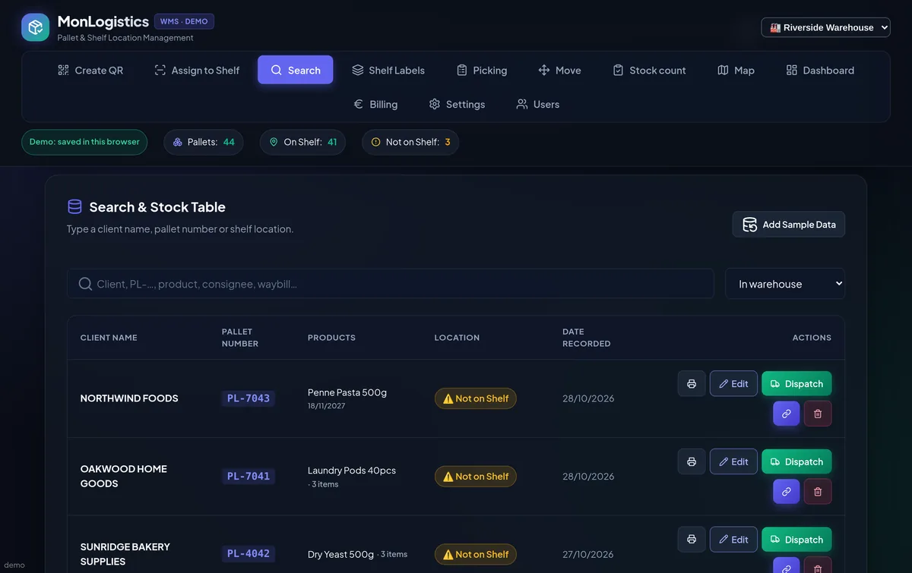
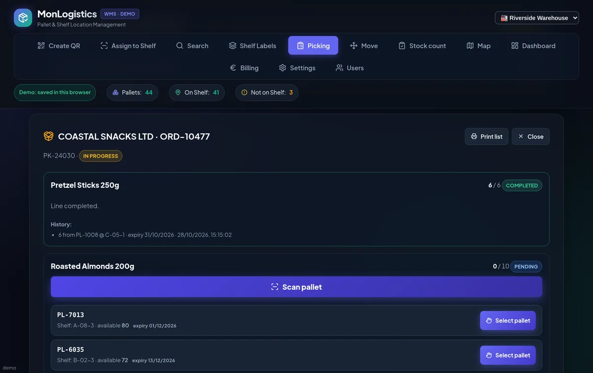
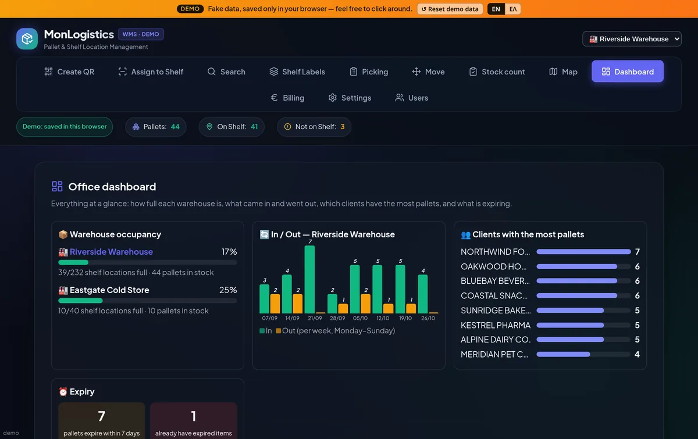

Για επιχειρήσεις
MonLogistics WMS: Απλή διαχείριση αποθήκης παλετών από το κινητό
Παλέτες, λήξεις, θέσεις ραφιών, picking και σκανάρισμα QR σε μία απλή εφαρμογή, χωρίς ειδικά scanners και χωρίς βαρύ σύστημα αποθήκης.
Το demo έχει δοκιμαστικά δεδομένα και είναι στα αγγλικά, με επιλογή ΕΛ για ελληνικά.
Για ποιον είναι
- Μικρές και μεσαίες αποθήκεςπου θέλουν τάξη στις παλέτες και στις θέσεις τους, χωρίς μεγάλο σύστημα.
- 3PLεταιρείες που αποθηκεύουν εμπορεύματα για λογαριασμό πελατών.
- Διανομείς τροφίμων, ποτών και FMCGμε προϊόντα που έχουν ημερομηνία λήξης.
- Όσοι δουλεύουν ακόμα με Excel ή χαρτίκαι θέλουν να περάσουν σε κάτι πιο οργανωμένο.
Η εφαρμογή
Ενδεικτικές οθόνες με δοκιμαστικά δεδομένα. Οι οθόνες του demo είναι στα αγγλικά.
-

Παλέτες και αναζήτηση -

Χάρτης αποθήκης -

Picking με πρόταση FEFO -

Dashboard -

Πύλη πελάτη -

Στο κινητό
Τι κάνει
- Παλέτες με προϊόντα και λήξεις, με επισήμανση όσων λήγουν σύντομα.
- Θέσεις ραφιών και διαδρόμων και χάρτης αποθήκης.
- Μετακινήσεις και απογραφή.
- Αναζήτηση προϊόντος σε όλες τις παλέτες.
- Εξαγωγές με ιστορικό.
- Picking με εισαγωγή παραγγελιών από Excel, CSV ή PDF και πρόταση παλέτας με FEFO (πρώτα φεύγει ό,τι λήγει νωρίτερα).
- Σκανάρισμα QR με την κάμερα του κινητού, χωρίς ειδικά scanners.
- Εκτύπωση ετικετών QR και λιστών picking.
- Dashboard.
- Πύλη πελάτη: ένα ιδιωτικό link όπου ο πελάτης βλέπει μόνο το δικό του απόθεμα.
- Ρόλοι Διαχειριστής και Υπάλληλος.
- Συνεχίζει να δουλεύει σε κενά σύνδεσης και στέλνει τις αλλαγές όταν επιστρέψει το ίντερνετ.
- Εγκαθίσταται σαν εφαρμογή σε κινητό ή PC.
Δοκίμασέ το
Δες το demo με δοκιμαστικά δεδομένα ή ζήτησε μια σύντομη παρουσίαση.